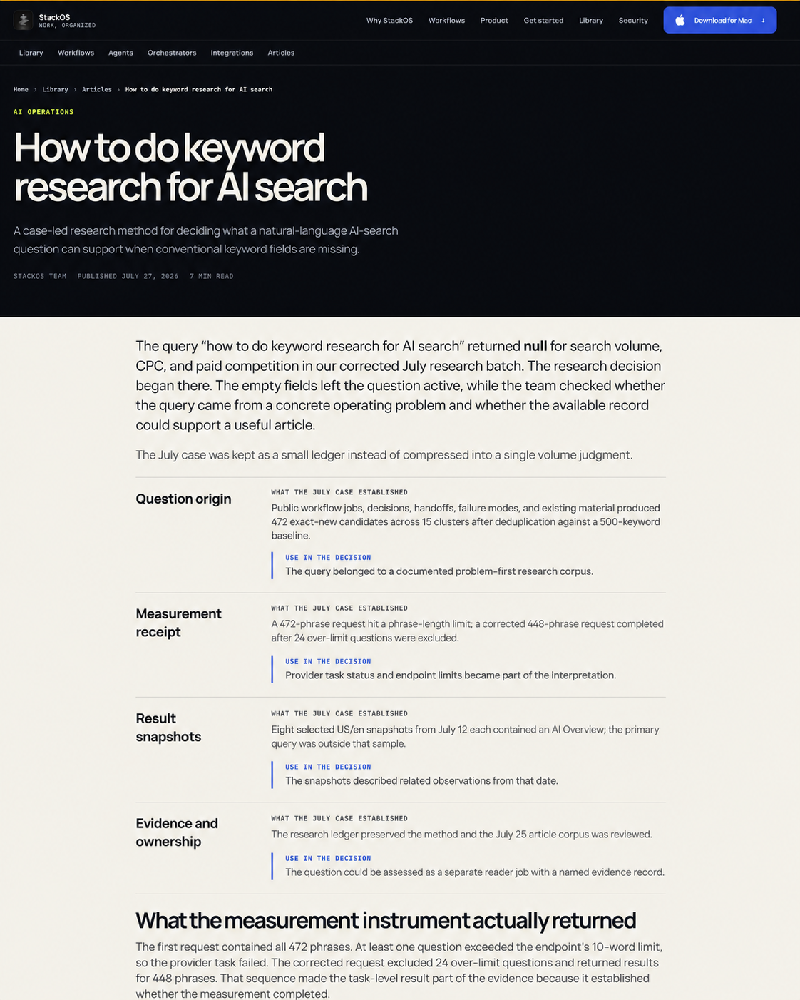
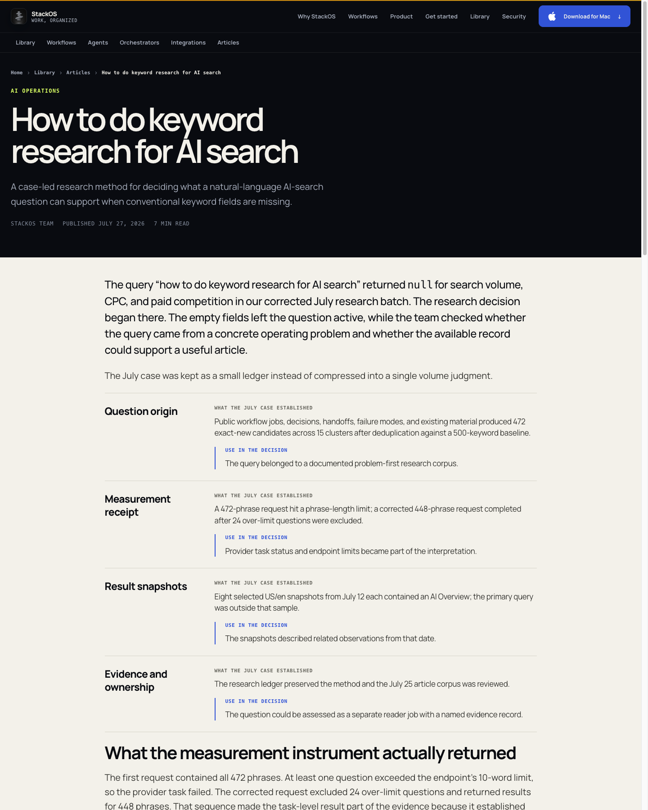
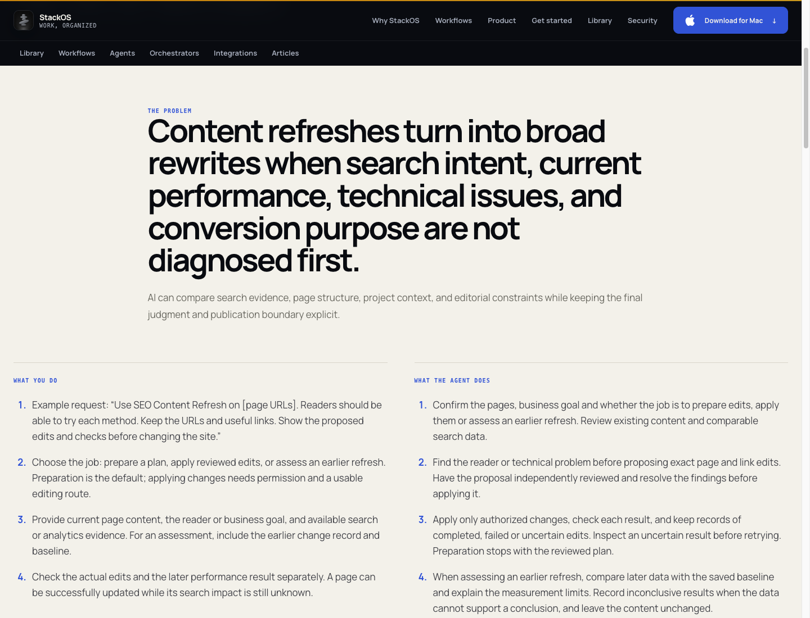
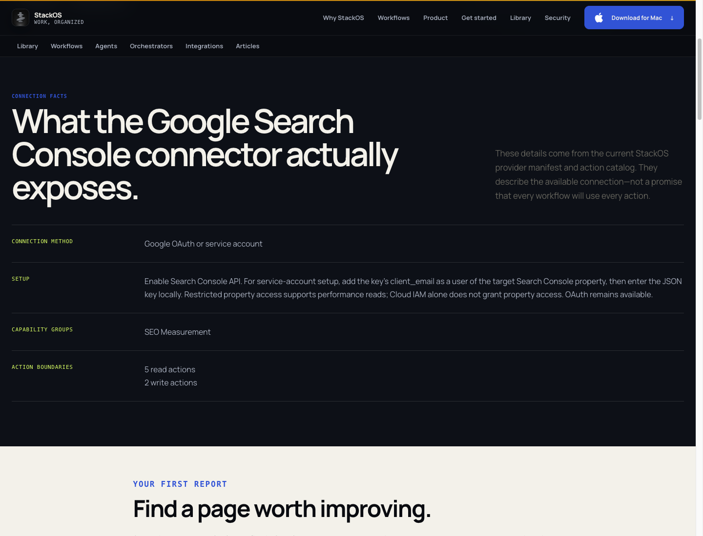
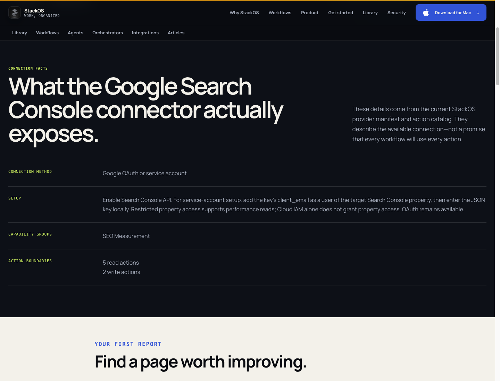

StackOS option 3 comparison
Selected option 3
Local implementation
Selected option 3 — content
Local implementation — content
QA-1 before — workflow labels
QA-1 verified — workflow labels
QA-2 before — facts heading
QA-2 verified — facts heading